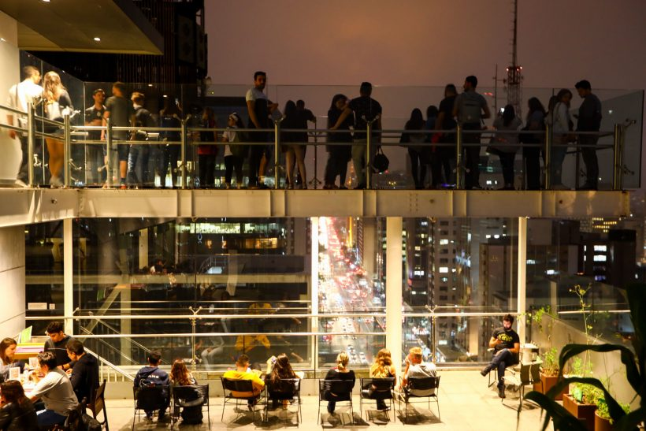
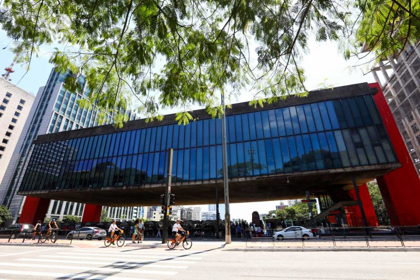

São Paulo
Parque Ibirapuera
O turbilhão que é a cidade de São Paulo pode dar um grande nó na cabeça dos turistas que visitam a capital paulista. Para quem chega a SP meio perdido, sem saber o que fazer, quais os melhores lugares para visitar ou os principais pontos turísticos de São Paulo, preparamos um post especial com 28 dicas para curtir São Paulo quase de graça! São mais de 50 atrações para você explorar uma das maiores cidades do mundo sem gastar quase nada, com diversas dicas do que fazer de graça em São Paulo.
Economizar é sempre uma boa pedida para os viajantes que gostam de encarar o mundo. Aqui você encontrará várias opções gratuitas de passeios, museus , parques e pontos turísticos de São Paulo, além de hábitos paulistanos que custam pouco e valem muito (como um bom pão na chapa e um pastel de feira fresquinho). Algumas atrações de SP são de graça em apenas um dia na semana, outras são 100% na faixa! É hora de visitar as melhores atrações de São Paulo, como o MASP e o MAM; curtir um show no Ibirapuera; se deliciar com os sabores do Mercado Municipal; e até fazer um tour sem gastar nada! Barato e inesquecível!
Folha São PauloO que fazer (quase de graça) em São Paulo: pontos turísticos e muito mais
São Paulo pode sair bem em conta para quem busca uma viagem de final de semana e também para os que desejam curtir a capital paulista intensamente e por vários dias. Turismo em SP é barato e o melhor de tudo é saber que Sampa é tão grandiosa e efervescente que sempre haverá uma novidade para descobrir na sua próxima visita. Não faltam pontos turísticos em São Paulo, assim como maravilhosas atrações mesmo para os moradores, que muitas vezes se perdem na hora de escolher onde ir em SP.
Se você faz a linha que sempre economiza nas viagens e conhece várias dicas do que fazer em São Paulo de graça, conte pra gente nos comentários. Quanto mais economizarmos, melhor! São Paulo e turismo têm tudo a ver. Não perca tempo e anote todas as dicas de onde ir em São Paulo. Quem sabe não nos encontramos na Paulista!
Aniversário de São Paulo
O aniversário da cidade de São Paulo é comemorado no dia 25 de janeiro. A data é marcada por um feriado municipal, que movimenta toda a capital paulista e rende uma boa folga para os moradores. Independente do feriado do aniversário de SP, aproveite todas as outras folgas do ano para curtir intensamente a cidade. O que não falta são feriados no calendário 2023 para passear pela maior cidade do Brasil.

1 – Percorra a Avenida Paulista de ponta a ponta
Principal avenida da cidade e um dos melhores pontos turísticos de SP,
a Avenida Paulista é um bom resumo do turbilhão de diferentes culturas que formam a cidade.
Ela é capaz de ocupar um viajante por bastante tempo, por isso, se for a sua primeira vez em São Paulo,
não se apresse em sair da Paulista. Caminhar sem rumo já é o suficiente para entrar no clima de uma das
maiores cidades do mundo. Vale até alugar uma bike compartilhada para percorrer a nova ciclovia
que corta a Paulista de ponta a ponta. A avenida, um dos principais pontos turísticos de SP, é sempre
movimentada, até mesmo tarde da noite. E a cada momento ela é tomada por um público diferente, sendo assim,
não perca a oportunidade de sempre dar uma passadinha por lá.
Quanto: Gratuito.
Onde: Avenida Paulista.
Quando: Sempre.
2 – Visite os espaços culturais da Paulista, a começar pelo MASP.
Caminhar pela Avenida Paulista é uma das melhores atrações de São Paulo. Não deixe de explorar as atrações
culturais oferecidas por lá. A Avenida Paulista concentra excelentes opções de museus e espaços destinados à cultura.
O melhor de tudo é saber que alguns deles oferecem entrada gratuita para exposições, shows e até peças de teatro,
o que faz do lugar um dos imperdíveis pontos turísticos de São Paulo.

Comece pelo Museu de Arte de São Paulo, o MASP, que oferece um dos melhores acervos de arte no Brasil e está entre os mais procurados pontos turísticos de São Paulo. Depois, visite espaços como o Instituto oreira Sales da Paulista, o Itaú Cultural, o Centro Cultural Fiesp, a Japan House e a Casa das Rosas, onde um cafezinho em meio ao jardim é excelente pedida. Não perca também a chance de visitar a Livraria Cultura no Conjunto Nacional, uma das maiores do país. Ao caminhar, procure por alguns alguns famosos grafites, omo a grandiosa imagem de Oscar Niemeyer feita pelo artista Eduardo Kobra.